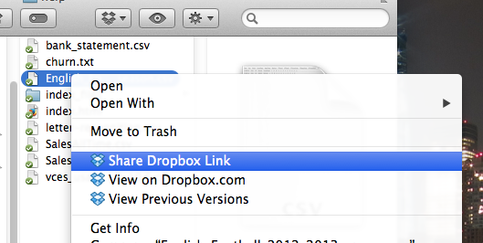
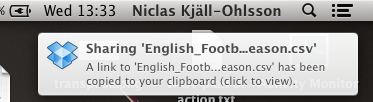
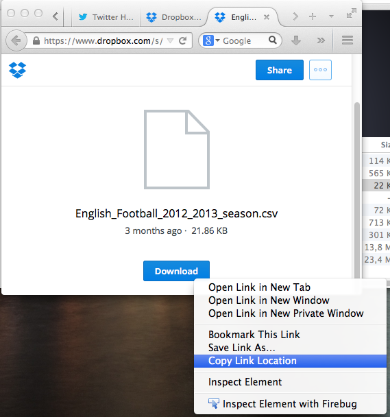

-
In your file explorer right-click (Windows) / doublefinger-click (Mac) a Dropbox file and then click "Share Dropbox Link"

-
The following notification will appear on your screen. Click it

-
A Dropbox web page will appear. Right-click / doublefinger-click the Download button and click "Copy Link Location"

-
Paste the link you just copied in the following text box and click here to generate the final link which will appear below.